ANÁLISIS EXPLORATORIO#
Importación de Librerias#
try:
import pandas as pd
import numpy as np
import scipy.stats as stats
import matplotlib.pyplot as plt
import seaborn as sns
import missingno as msno
from sklearn.model_selection import train_test_split, GridSearchCV
from sklearn.pipeline import Pipeline
from sklearn.preprocessing import StandardScaler, OneHotEncoder
from sklearn.compose import ColumnTransformer
from sklearn.linear_model import Ridge, Lasso, LogisticRegression
from sklearn.metrics import classification_report, mean_squared_error, r2_score
from sklearn.impute import KNNImputer
from dython.nominal import associations
from IPython.display import display
from sklearn.pipeline import Pipeline
from sklearn.compose import ColumnTransformer
from sklearn.preprocessing import OneHotEncoder, StandardScaler
from sklearn.linear_model import Ridge, Lasso, LogisticRegression
from sklearn.model_selection import GridSearchCV, train_test_split
from sklearn.metrics import (
mean_absolute_error, mean_squared_error, r2_score,
confusion_matrix, accuracy_score, precision_score, recall_score,
f1_score, roc_auc_score, roc_curve)
from sklearn.experimental import enable_iterative_imputer
from sklearn.impute import IterativeImputer, SimpleImputer
from sklearn.preprocessing import LabelEncoder
print("Todas las librerías se han importado correctamente. El entorno está listo.")
except ImportError as e:
print("Error al importar una o más librerías:")
print(e)
Todas las librerías se han importado correctamente. El entorno está listo.
Carga de Datos#
# Cargar datos
df_Original = pd.read_csv("vehicles.csv")
Visión general de los datos#
df = df_Original.copy() #generamos una copia para no modificar los datos originales
Forma del Dataframe
df.shape
(426880, 26)
Visualización de Columnas y tipos de datos
df.dtypes
id int64
url object
region object
region_url object
price int64
year float64
manufacturer object
model object
condition object
cylinders object
fuel object
odometer float64
title_status object
transmission object
VIN object
drive object
size object
type object
paint_color object
image_url object
description object
county float64
state object
lat float64
long float64
posting_date object
dtype: object
Visualización de los primeros registros
df.head(10)
| id | url | region | region_url | price | year | manufacturer | model | condition | cylinders | ... | size | type | paint_color | image_url | description | county | state | lat | long | posting_date | |
|---|---|---|---|---|---|---|---|---|---|---|---|---|---|---|---|---|---|---|---|---|---|
| 0 | 7222695916 | https://prescott.craigslist.org/cto/d/prescott... | prescott | https://prescott.craigslist.org | 6000 | NaN | NaN | NaN | NaN | NaN | ... | NaN | NaN | NaN | NaN | NaN | NaN | az | NaN | NaN | NaN |
| 1 | 7218891961 | https://fayar.craigslist.org/ctd/d/bentonville... | fayetteville | https://fayar.craigslist.org | 11900 | NaN | NaN | NaN | NaN | NaN | ... | NaN | NaN | NaN | NaN | NaN | NaN | ar | NaN | NaN | NaN |
| 2 | 7221797935 | https://keys.craigslist.org/cto/d/summerland-k... | florida keys | https://keys.craigslist.org | 21000 | NaN | NaN | NaN | NaN | NaN | ... | NaN | NaN | NaN | NaN | NaN | NaN | fl | NaN | NaN | NaN |
| 3 | 7222270760 | https://worcester.craigslist.org/cto/d/west-br... | worcester / central MA | https://worcester.craigslist.org | 1500 | NaN | NaN | NaN | NaN | NaN | ... | NaN | NaN | NaN | NaN | NaN | NaN | ma | NaN | NaN | NaN |
| 4 | 7210384030 | https://greensboro.craigslist.org/cto/d/trinit... | greensboro | https://greensboro.craigslist.org | 4900 | NaN | NaN | NaN | NaN | NaN | ... | NaN | NaN | NaN | NaN | NaN | NaN | nc | NaN | NaN | NaN |
| 5 | 7222379453 | https://hudsonvalley.craigslist.org/cto/d/west... | hudson valley | https://hudsonvalley.craigslist.org | 1600 | NaN | NaN | NaN | NaN | NaN | ... | NaN | NaN | NaN | NaN | NaN | NaN | ny | NaN | NaN | NaN |
| 6 | 7221952215 | https://hudsonvalley.craigslist.org/cto/d/west... | hudson valley | https://hudsonvalley.craigslist.org | 1000 | NaN | NaN | NaN | NaN | NaN | ... | NaN | NaN | NaN | NaN | NaN | NaN | ny | NaN | NaN | NaN |
| 7 | 7220195662 | https://hudsonvalley.craigslist.org/cto/d/poug... | hudson valley | https://hudsonvalley.craigslist.org | 15995 | NaN | NaN | NaN | NaN | NaN | ... | NaN | NaN | NaN | NaN | NaN | NaN | ny | NaN | NaN | NaN |
| 8 | 7209064557 | https://medford.craigslist.org/cto/d/grants-pa... | medford-ashland | https://medford.craigslist.org | 5000 | NaN | NaN | NaN | NaN | NaN | ... | NaN | NaN | NaN | NaN | NaN | NaN | or | NaN | NaN | NaN |
| 9 | 7219485069 | https://erie.craigslist.org/cto/d/erie-2012-su... | erie | https://erie.craigslist.org | 3000 | NaN | NaN | NaN | NaN | NaN | ... | NaN | NaN | NaN | NaN | NaN | NaN | pa | NaN | NaN | NaN |
10 rows × 26 columns
Limpieza de nombres de variables#
# Diccionario de traducción: inglés → español
traducciones = {
"id": "id",
"url": "enlace",
"region": "region",
"region_url": "enlace_region",
"price": "precio",
"year": "anio",
"manufacturer": "fabricante",
"model": "modelo",
"condition": "condicion",
"cylinders": "cilindros",
"fuel": "combustible",
"odometer": "odometro",
"title_status": "estado_titulo",
"transmission": "transmision",
"VIN": "numero_vin",
"drive": "traccion",
"size": "tamanio",
"type": "tipo",
"paint_color": "color_pintura",
"image_url": "enlace_imagen",
"description": "descripcion",
"county": "condado",
"state": "estado",
"lat": "lat",
"long": "long",
"posting_date": "fecha_publicacion"
}
# Aplicar renombramiento al DataFrame
df.rename(columns=traducciones, inplace=True)
Visión de valores faltantes#
Valores faltantes por columna.
faltantes = df.isnull().sum()
porcentaje_faltantes = (faltantes / len(df)) * 100
faltantes_df = pd.DataFrame({"Nulos": faltantes, "%": porcentaje_faltantes})
faltantes_df.sort_values(by="Nulos", ascending=True)
| Nulos | % | |
|---|---|---|
| id | 0 | 0.000000 |
| enlace | 0 | 0.000000 |
| region | 0 | 0.000000 |
| enlace_region | 0 | 0.000000 |
| precio | 0 | 0.000000 |
| estado | 0 | 0.000000 |
| enlace_imagen | 68 | 0.015930 |
| fecha_publicacion | 68 | 0.015930 |
| descripcion | 70 | 0.016398 |
| anio | 1205 | 0.282281 |
| transmision | 2556 | 0.598763 |
| combustible | 3013 | 0.705819 |
| odometro | 4400 | 1.030735 |
| modelo | 5277 | 1.236179 |
| lat | 6549 | 1.534155 |
| long | 6549 | 1.534155 |
| estado_titulo | 8242 | 1.930753 |
| fabricante | 17646 | 4.133714 |
| tipo | 92858 | 21.752717 |
| color_pintura | 130203 | 30.501078 |
| traccion | 130567 | 30.586347 |
| numero_vin | 161042 | 37.725356 |
| condicion | 174104 | 40.785232 |
| cilindros | 177678 | 41.622470 |
| tamanio | 306361 | 71.767476 |
| condado | 426880 | 100.000000 |
Visualización de duplicados#
Revision de duplicados
print(f"Duplicados detectados: {df.duplicated().sum()}")
Duplicados detectados: 0
Eliminación de Variables irrelevantes#
Se eliminan las variables tamaño, condado y cilindros por su gran porcentaje de datos faltantes, y las demás se descartan porque son irrelevantes en el estudio.
df.drop(columns=['id', 'enlace', 'tamanio', 'enlace_imagen','cilindros', 'enlace_region', 'numero_vin', 'descripcion', 'condado', 'lat', 'long', 'fecha_publicacion'], inplace=True)
Visualización de nueva estructura#
# Convertir a categórica
df["anio"] = df["anio"].astype("object")
df.shape
(426880, 14)
df.dtypes
region object
precio int64
anio object
fabricante object
modelo object
condicion object
combustible object
odometro float64
estado_titulo object
transmision object
traccion object
tipo object
color_pintura object
estado object
dtype: object
Visualizacion de correlación en valores faltantes#
msno.heatmap(df)
<Axes: >
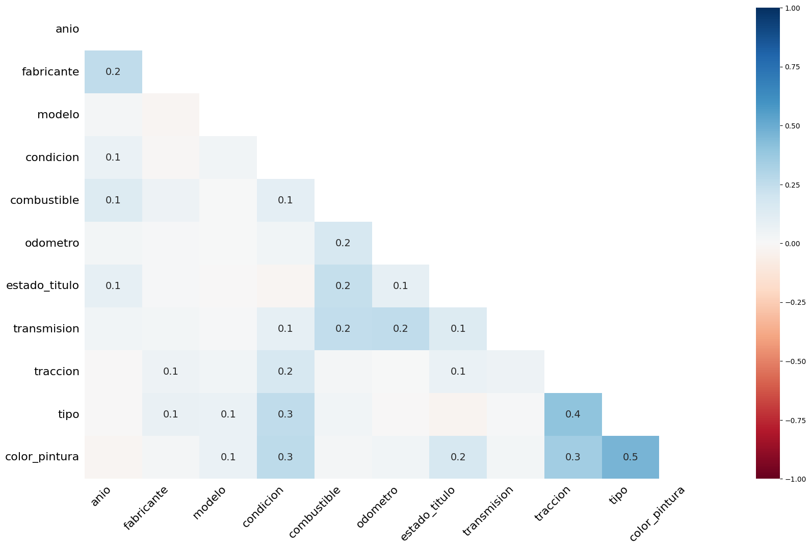
El gráfico muestra cómo se relacionan los valores faltantes entre variables del dataset de vehículos.
Los números representan el grado de co-ocurrencia de valores nulos (qué tanto faltan juntos en las mismas filas).
La relación más fuerte es entre
color_pinturaytipo(0.5), lo que indica que suelen faltar al mismo tiempo.También destacan
traccionconcilindros(0.4) ycolor_pinturaconcilindros(0.3).La mayoría de combinaciones muestran valores bajos (<0.2), indicando que los faltantes no se concentran en bloque.
En conclusión, los faltantes se presentan de forma parcial y localizada, principalmente en color_pintura, tipo, cilindros y traccion.
msno.matrix(df)
<Axes: >
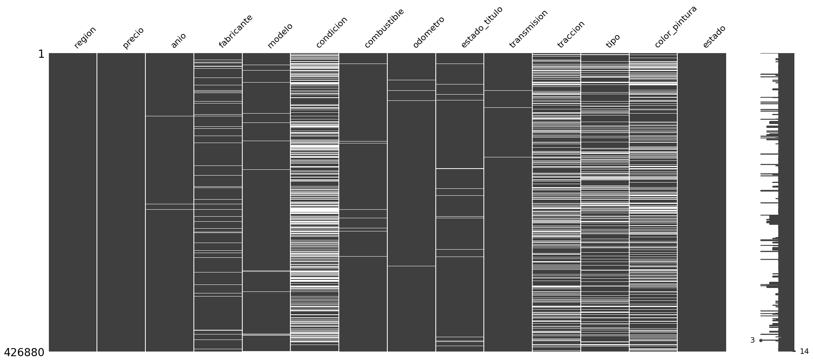
El gráfico muestra dónde faltan datos en el dataset.
Las variables con más vacíos son condicion, cilindros, traccion, tipo y color_pintura.
En cambio, region, precio, anio y estado están casi completos.
Visualización de correlación entre variables antes de imputar#
associations(df, figsize=(12,10))
c:\Users\franc\anaconda3\envs\ml_env\Lib\site-packages\dython\nominal.py:558: FutureWarning: Downcasting object dtype arrays on .fillna, .ffill, .bfill is deprecated and will change in a future version. Call result.infer_objects(copy=False) instead. To opt-in to the future behavior, set `pd.set_option('future.no_silent_downcasting', True)`
df.fillna(nan_replace_value, inplace=True)
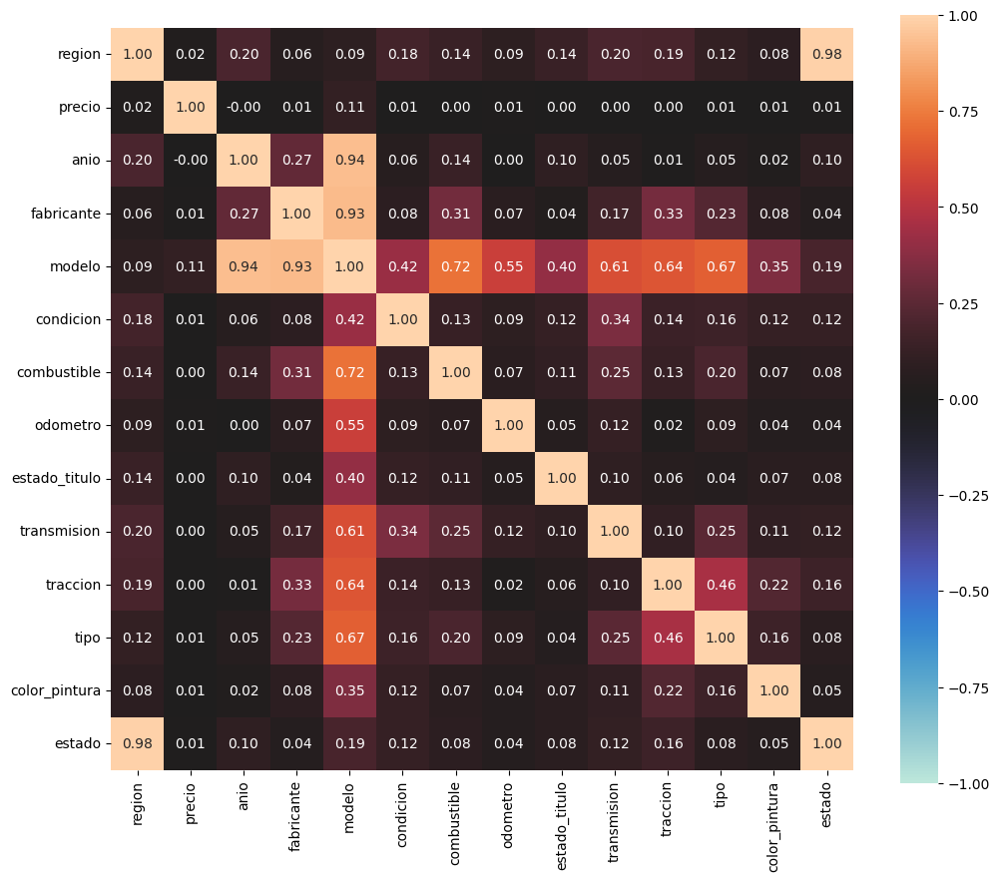
{'corr': region precio anio fabricante modelo condicion \
region 1.000000 0.024676 0.195793 0.061874 0.091938 0.176913
precio 0.024676 1.000000 -0.000270 0.008591 0.113581 0.007526
anio 0.195793 -0.000270 1.000000 0.266750 0.936490 0.059325
fabricante 0.061874 0.008591 0.266750 1.000000 0.927879 0.081406
modelo 0.091938 0.113581 0.936490 0.927879 1.000000 0.415712
condicion 0.176913 0.007526 0.059325 0.081406 0.415712 1.000000
combustible 0.139279 0.001202 0.136826 0.313930 0.724344 0.130966
odometro 0.092364 0.010047 0.003139 0.071170 0.554846 0.090948
estado_titulo 0.135414 0.001151 0.095693 0.038551 0.403921 0.117363
transmision 0.198305 0.002862 0.052644 0.166294 0.611371 0.336336
traccion 0.193923 0.003372 0.012835 0.325085 0.639084 0.142957
tipo 0.116672 0.006362 0.048930 0.228458 0.667632 0.155862
color_pintura 0.081596 0.006070 0.024330 0.082720 0.347608 0.124828
estado 0.984856 0.014291 0.095054 0.043775 0.192138 0.117505
combustible odometro estado_titulo transmision traccion \
region 0.139279 0.092364 0.135414 0.198305 0.193923
precio 0.001202 0.010047 0.001151 0.002862 0.003372
anio 0.136826 0.003139 0.095693 0.052644 0.012835
fabricante 0.313930 0.071170 0.038551 0.166294 0.325085
modelo 0.724344 0.554846 0.403921 0.611371 0.639084
condicion 0.130966 0.090948 0.117363 0.336336 0.142957
combustible 1.000000 0.072226 0.108991 0.252090 0.125674
odometro 0.072226 1.000000 0.047561 0.121338 0.019177
estado_titulo 0.108991 0.047561 1.000000 0.096241 0.056405
transmision 0.252090 0.121338 0.096241 1.000000 0.101837
traccion 0.125674 0.019177 0.056405 0.101837 1.000000
tipo 0.197513 0.091350 0.042580 0.246375 0.457580
color_pintura 0.070945 0.039553 0.071361 0.108623 0.222647
estado 0.079675 0.040662 0.077733 0.116405 0.155081
tipo color_pintura estado
region 0.116672 0.081596 0.984856
precio 0.006362 0.006070 0.014291
anio 0.048930 0.024330 0.095054
fabricante 0.228458 0.082720 0.043775
modelo 0.667632 0.347608 0.192138
condicion 0.155862 0.124828 0.117505
combustible 0.197513 0.070945 0.079675
odometro 0.091350 0.039553 0.040662
estado_titulo 0.042580 0.071361 0.077733
transmision 0.246375 0.108623 0.116405
traccion 0.457580 0.222647 0.155081
tipo 1.000000 0.155819 0.078062
color_pintura 0.155819 1.000000 0.053863
estado 0.078062 0.053863 1.000000 ,
'ax': <Axes: >}
El gráfico muestra las correlaciones entre variables numéricas y categóricas del dataset.
Se observa alta correlación entre
regionyestado(0.98), lo que indica que aportan información muy similar.También destacan las relaciones entre
modeloconanio(0.94) y confabricante(0.72).transmisionytraccionpresentan correlaciones moderadas conmodeloytipo(0.4–0.6).La variable
preciocasi no se correlaciona con las demás (<0.1), lo que sugiere que depende de múltiples factores y no de una sola variable.
En general, hay multicolinealidad entre variables como modelo, anio y fabricante, mientras que otras como precio son más independientes.
Imputación de los datos#
Variable |
% Faltantes |
Estrategia |
|---|---|---|
id |
0.000000% |
Eliminar (irrelevante) |
enlace |
0.000000% |
Eliminar (irrelevante) |
region |
0.000000% |
Eliminar (irrelevante) |
enlace_region |
0.000000% |
Eliminar (irrelevante) |
precio |
0.000000% |
Imputar por mediana (no normal) despues de eliminar extremos. |
estado |
0.000000% |
Eliminar (irrelevante) |
enlace_imagen |
0.015930% |
Eliminar (irrelevante) |
fecha_publicacion |
0.015930% |
Eliminar (irrelevante) |
descripcion |
0.016398% |
Eliminar (irrelevante) |
anio |
0.282281% |
Imputar por moda |
transmision |
0.598763% |
Imputar por moda |
combustible |
0.705819% |
Imputar por moda |
odometro |
1.030735% |
Imputar por mediana (no normal) |
modelo |
1.236179% |
Nueva clase “Desconocido” |
lat |
1.534155% |
Eliminar (irrelevante) |
long |
1.534155% |
Eliminar (irrelevante) |
estado_titulo |
1.930753% |
Imputar por moda |
fabricante |
4.133714% |
Nueva clase “Desconocido” |
tipo |
21.752717% |
Imputar por “Desconocido” |
color_pintura |
30.501078% |
Imputar por moda |
traccion |
30.586347% |
Imputar por moda |
numero_vin |
37.725356% |
Eliminar (irrelevante) |
condicion |
40.785232% |
Nueva clase “Desconocido” |
cilindros |
41.622470% |
Eliminar (>40% faltantes) |
tamanio |
71.767476% |
Eliminar (>40% faltantes) |
condado |
100.000000% |
Eliminar (>40% faltantes) |
Variables categóricas#
fabricante, modelo, condicion y tipo#
Columnas relevantes y seleccionadas para imputar.
cat_cols_ = df.select_dtypes(include=['object']).columns.tolist()
print(" Variables categóricas:")
print(cat_cols_)
Variables categóricas:
['region', 'anio', 'fabricante', 'modelo', 'condicion', 'combustible', 'estado_titulo', 'transmision', 'traccion', 'tipo', 'color_pintura', 'estado']
Cantidad de clases en variables categoricas
unique_counts = df[cat_cols_].nunique().sort_values(ascending=False)
print(unique_counts)
modelo 29667
region 404
anio 114
estado 51
fabricante 42
tipo 13
color_pintura 12
condicion 6
estado_titulo 6
combustible 5
transmision 3
traccion 3
dtype: int64
Imputar con clase nueva Desconocido, las variables fabricante, modelo, condicion y tipo ya que son variables importantes para el modelo y no queremos distorsionar información.
cols = ['fabricante', 'modelo', 'condicion', 'tipo']
for col in cols:
# Crear columna indicadora de nulos
df[f'{col}_es_nulo'] = df[col].isnull().astype(int)
# Reemplazar los nulos por 'desconocido'
df[col] = df[col].fillna('desconocido')
print(f"→ {col}: {df[f'{col}_es_nulo'].sum()} valores nulos imputados con 'desconocido'.")
→ fabricante: 17646 valores nulos imputados con 'desconocido'.
→ modelo: 5277 valores nulos imputados con 'desconocido'.
→ condicion: 174104 valores nulos imputados con 'desconocido'.
→ tipo: 92858 valores nulos imputados con 'desconocido'.
Variables numéricas#
Variables numericas a visualizar.
num_cols_ = df.select_dtypes(include=['int64', 'float64']).columns.tolist()
print("\n Variables numéricas:")
print(num_cols_)
Variables numéricas:
['precio', 'odometro', 'fabricante_es_nulo', 'modelo_es_nulo', 'condicion_es_nulo', 'tipo_es_nulo']
Odometro#
Imputar odometro. Como es una variable numérica, revisemos outliers y normalidad.
data = df['odometro'].dropna()
sns.boxplot(x=data)
plt.title("Boxplot de 'odometro'")
plt.show()
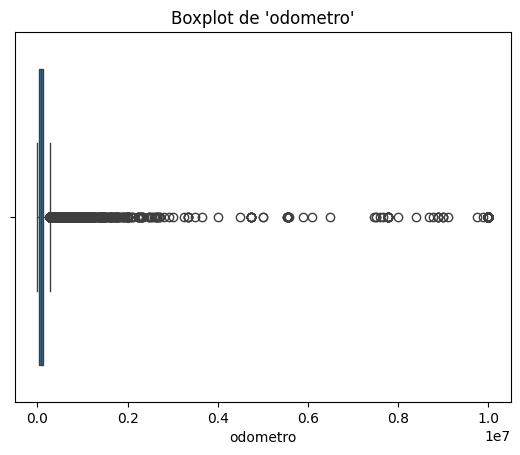
Este es el diagrama de cajas de la variable representativa del kilometraje, podemos observar presencia de outliers y muy probablemente valores imposibles dentro del contexto.
# Histograma
plt.figure(figsize=(8,5))
sns.histplot(data, bins=50, kde=True)
plt.title("Distribución de la variable 'odometro'")
plt.show()
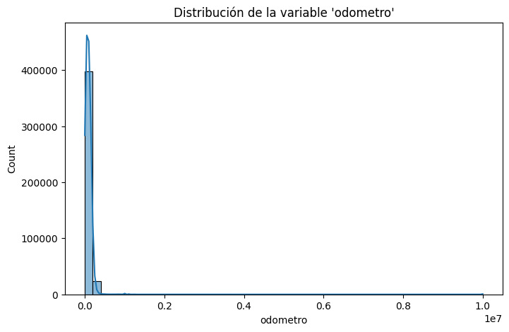
# Q-Q plot
stats.probplot(data, dist="norm", plot=plt)
plt.title("Q-Q Plot para 'odometro'")
plt.show()
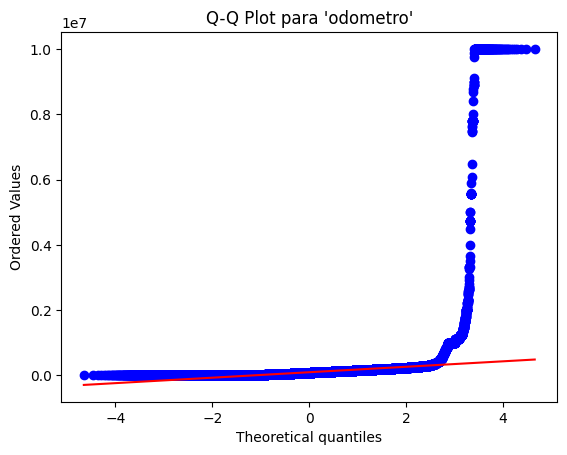
La variable odometro presenta un alto número de valores extremos que superan ampliamente los rangos coherentes de kilometraje para un vehículo. Estos registros, que alcanzan incluso cifras cercanas a los diez millones, son considerados valores imposibles ya que no corresponden a condiciones reales de uso y probablemente se deban a errores de digitación o de registro.
Mantener estos datos podría distorsionar los análisis estadísticos y los modelos predictivos, generando sesgos en la estimación de tendencias centrales y dispersión. Por esta razón, se opta por tratar los outliers mas adelante.
Para evaluar si la variable odometro sigue una distribución normal, se aplican diferentes pruebas estadísticas. En primer lugar, se utiliza el test de D’Agostino & Pearson, el cual combina medidas de asimetría (skewness) y curtosis (kurtosis) para determinar si los datos se desvían significativamente de una distribución normal. Este test es especialmente adecuado en muestras grandes, ya que no está limitado como el test de Shapiro-Wilk.
# D’Agostino & Pearson
k2, p = stats.normaltest(data)
print("---- D’Agostino & Pearson ----")
print(f"Estadístico: {k2:.3f}, p-valor: {p:.3f}")
print("Interpretación:", "Normal" if p > 0.05 else "No Normal")
---- D’Agostino & Pearson ----
Estadístico: 1197411.074, p-valor: 0.000
Interpretación: No Normal
Adicionalmente, se emplea el test de Anderson-Darling, el cual compara la distribución empírica de los datos contra la distribución normal teórica, asignando mayor peso a las colas. Esto resulta útil en variables como odometro, donde suelen presentarse valores extremos.
# Anderson-Darling
anderson_result = stats.anderson(data, dist='norm')
print("\n---- Anderson-Darling ----")
print(f"Estadístico: {anderson_result.statistic:.3f}")
for cv, sig in zip(anderson_result.critical_values, anderson_result.significance_level):
print(f"Nivel de significancia {sig}%: valor crítico {cv:.3f}")
print("Interpretación:",
"No Normal" if anderson_result.statistic > anderson_result.critical_values[2] else "Normal")
---- Anderson-Darling ----
Estadístico: 72920.642
Nivel de significancia 15.0%: valor crítico 0.576
Nivel de significancia 10.0%: valor crítico 0.656
Nivel de significancia 5.0%: valor crítico 0.787
Nivel de significancia 2.5%: valor crítico 0.918
Nivel de significancia 1.0%: valor crítico 1.092
Interpretación: No Normal
Ambos métodos permiten tener una visión más robusta: mientras que D’Agostino & Pearson analiza la forma general de la distribución, Anderson-Darling es más sensible a los valores en los extremos. En conjunto, ofrecen evidencia suficiente para concluir si la variable se ajusta o no a la normalidad.
Precio#
sns.boxplot(x=df['precio'])
plt.title("Boxplot de 'precio'")
plt.show()
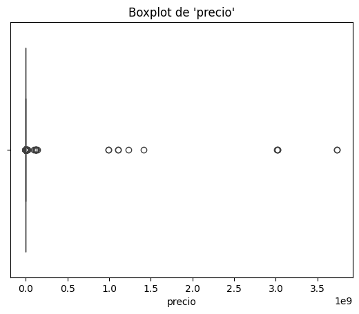
plt.figure(figsize=(8,5))
sns.histplot(df['precio'].dropna(), bins=50, kde=True)
plt.title("Distribución de 'precio'")
plt.show()
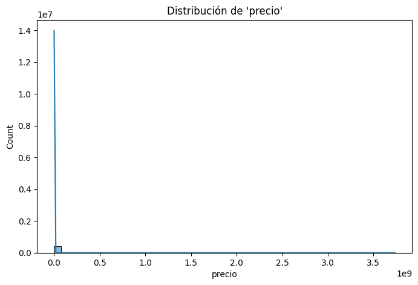
stats.probplot(df['precio'], dist="norm", plot=plt)
plt.title("Q-Q Plot para 'precio'")
plt.show()
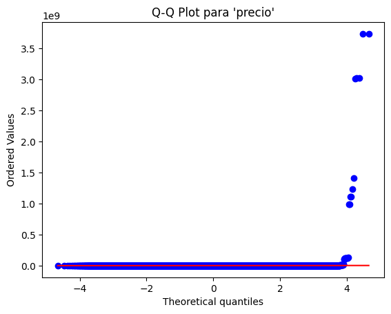
La variable precio presenta una gran cantidad de valores extremos que no corresponden a precios reales de vehículos. En el análisis exploratorio se identificaron registros con valores cercanos a miles de millones, lo cual es imposible en el contexto del mercado de autos usados. Estos registros son considerados valores imposibles y, al igual que en el caso de odometro, se opta por tratar los outliers.
Generación de variable Binaria HighDemand#
Generamos la variable binaria de alta demanda basada en la mediana del precio, pues mas adelante se realiza winsorización de datos atipicos pero esto no afecta significativamente en la formación de la variable.
# Generar variable binaria de alta demanda basada en la mediana del precio
df['HighDemand'] = (df['precio'] > df['precio'].median()).astype(int)
Realizamos partición antes de limpiar e imputar con estadísticos para evitar Data leakage#
# Separar variables
X = df.drop(columns=['precio', 'HighDemand'])
y_reg = df['precio']
y_clf = df['HighDemand']
X_train_reg, X_test_reg, y_train_reg, y_test_reg = train_test_split(X, y_reg, test_size=0.2, random_state=42)
X_train_clf, X_test_clf, y_train_clf, y_test_clf = train_test_split(X, y_clf, test_size=0.2, stratify=y_clf, random_state=42)
Realizamos limpieza de NaNs#
combustible, estado_titulo, transmision, anio, traccion,color_pintura#
Las siguientes variables son importantes pero no principales imputamos por moda
# Variables a imputar por moda
cols = ["combustible", "estado_titulo", "transmision", "anio", "traccion","color_pintura"]
cols_moda = df[cols]
# Imputar por moda (valor más frecuente de cada columna)
for col in cols_moda:
moda_reg = X_train_reg[col].mode()[0]
moda_clf = X_train_clf[col].mode()[0]
X_train_reg[col].fillna(moda_reg, inplace=True)
X_test_reg[col].fillna(moda_reg, inplace=True)
X_train_clf[col].fillna(moda_clf, inplace=True)
X_test_clf[col].fillna(moda_clf, inplace=True)
print(moda_reg, moda_clf)
C:\Users\franc\AppData\Local\Temp\ipykernel_6308\3482083034.py:10: FutureWarning: A value is trying to be set on a copy of a DataFrame or Series through chained assignment using an inplace method.
The behavior will change in pandas 3.0. This inplace method will never work because the intermediate object on which we are setting values always behaves as a copy.
For example, when doing 'df[col].method(value, inplace=True)', try using 'df.method({col: value}, inplace=True)' or df[col] = df[col].method(value) instead, to perform the operation inplace on the original object.
X_train_reg[col].fillna(moda_reg, inplace=True)
C:\Users\franc\AppData\Local\Temp\ipykernel_6308\3482083034.py:11: FutureWarning: A value is trying to be set on a copy of a DataFrame or Series through chained assignment using an inplace method.
The behavior will change in pandas 3.0. This inplace method will never work because the intermediate object on which we are setting values always behaves as a copy.
For example, when doing 'df[col].method(value, inplace=True)', try using 'df.method({col: value}, inplace=True)' or df[col] = df[col].method(value) instead, to perform the operation inplace on the original object.
X_test_reg[col].fillna(moda_reg, inplace=True)
C:\Users\franc\AppData\Local\Temp\ipykernel_6308\3482083034.py:12: FutureWarning: A value is trying to be set on a copy of a DataFrame or Series through chained assignment using an inplace method.
The behavior will change in pandas 3.0. This inplace method will never work because the intermediate object on which we are setting values always behaves as a copy.
For example, when doing 'df[col].method(value, inplace=True)', try using 'df.method({col: value}, inplace=True)' or df[col] = df[col].method(value) instead, to perform the operation inplace on the original object.
X_train_clf[col].fillna(moda_clf, inplace=True)
C:\Users\franc\AppData\Local\Temp\ipykernel_6308\3482083034.py:13: FutureWarning: A value is trying to be set on a copy of a DataFrame or Series through chained assignment using an inplace method.
The behavior will change in pandas 3.0. This inplace method will never work because the intermediate object on which we are setting values always behaves as a copy.
For example, when doing 'df[col].method(value, inplace=True)', try using 'df.method({col: value}, inplace=True)' or df[col] = df[col].method(value) instead, to perform the operation inplace on the original object.
X_test_clf[col].fillna(moda_clf, inplace=True)
C:\Users\franc\AppData\Local\Temp\ipykernel_6308\3482083034.py:10: FutureWarning: Downcasting object dtype arrays on .fillna, .ffill, .bfill is deprecated and will change in a future version. Call result.infer_objects(copy=False) instead. To opt-in to the future behavior, set `pd.set_option('future.no_silent_downcasting', True)`
X_train_reg[col].fillna(moda_reg, inplace=True)
C:\Users\franc\AppData\Local\Temp\ipykernel_6308\3482083034.py:11: FutureWarning: Downcasting object dtype arrays on .fillna, .ffill, .bfill is deprecated and will change in a future version. Call result.infer_objects(copy=False) instead. To opt-in to the future behavior, set `pd.set_option('future.no_silent_downcasting', True)`
X_test_reg[col].fillna(moda_reg, inplace=True)
C:\Users\franc\AppData\Local\Temp\ipykernel_6308\3482083034.py:12: FutureWarning: Downcasting object dtype arrays on .fillna, .ffill, .bfill is deprecated and will change in a future version. Call result.infer_objects(copy=False) instead. To opt-in to the future behavior, set `pd.set_option('future.no_silent_downcasting', True)`
X_train_clf[col].fillna(moda_clf, inplace=True)
C:\Users\franc\AppData\Local\Temp\ipykernel_6308\3482083034.py:13: FutureWarning: Downcasting object dtype arrays on .fillna, .ffill, .bfill is deprecated and will change in a future version. Call result.infer_objects(copy=False) instead. To opt-in to the future behavior, set `pd.set_option('future.no_silent_downcasting', True)`
X_test_clf[col].fillna(moda_clf, inplace=True)
white white
Odometro#
Imputar faltantes con la mediana por la NO normalidad.
odometro_train_reg = X_train_reg['odometro'].fillna(X_train_reg['odometro'].median())
odometro_test_reg = X_test_reg['odometro'].fillna(odometro_train_reg.median())
odometro_train_clf = X_train_clf['odometro'].fillna(X_train_clf['odometro'].median())
odometro_test_clf = X_test_clf['odometro'].fillna(odometro_train_clf.median())
print(odometro_train_reg.isnull().sum())
print(odometro_test_reg.isnull().sum())
print(odometro_train_clf.isnull().sum())
print(odometro_test_clf.isnull().sum())
0
0
0
0
sns.boxplot(x=odometro_train_reg)
plt.title("Boxplot de 'odometro'")
plt.show()
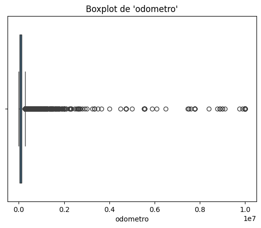
La variable odometro presentaba una distribución altamente sesgada hacia la derecha, con valores extremos que dificultaban su uso en modelos lineales. Estos algoritmos son sensibles a la presencia de outliers, ya que los valores muy grandes pueden dominar la varianza y afectar negativamente la estimación de los coeficientes.
A continuacion manejamos los datos atipicos con una clase personalizada para tratar outliers en un dataset numérico.
Parámetros
metodo:
"iqr"→ límites con rango intercuartílico (Q1 ± 1.5*IQR)."percentil"→ límites en percentiles 1% y 99%.
estrategia:
"eliminar"→ descarta filas con outliers."winsorizar"→ recorta valores extremos a los límites.
Flujo
fit()→ calcula límites de outliers para cada columna.transform()→ elimina o ajusta los valores fuera de esos límites.
from sklearn.base import BaseEstimator, TransformerMixin
from sklearn.preprocessing import StandardScaler
class ManejoAtipicos(BaseEstimator, TransformerMixin):
def __init__(self, metodo="iqr", estrategia="winsorizar"):
self.metodo = metodo
self.estrategia = estrategia
self.limites_ = {}
def fit(self, X, y=None):
X = pd.DataFrame(X)
for col in X.columns:
if self.metodo == "iqr":
Q1 = X[col].quantile(0.25)
Q3 = X[col].quantile(0.75)
IQR = Q3 - Q1
lim_inf = Q1 - 1.5 * IQR
lim_sup = Q3 + 1.5 * IQR
elif self.metodo == "percentil":
lim_inf = X[col].quantile(0.01)
lim_sup = X[col].quantile(0.99)
else:
raise ValueError("Método no soportado")
self.limites_[col] = (lim_inf, lim_sup)
return self
def transform(self, X):
X = pd.DataFrame(X).copy()
for col in X.columns:
lim_inf, lim_sup = self.limites_[col]
if self.estrategia == "eliminar":
X = X[(X[col] >= lim_inf) & (X[col] <= lim_sup)]
elif self.estrategia == "winsorizar":
X[col] = np.where(X[col] < lim_inf, lim_inf, X[col])
X[col] = np.where(X[col] > lim_sup, lim_sup, X[col])
return X.reset_index(drop=True)
# Instanciar el manejador de atípicos
atipicos_reg = ManejoAtipicos(metodo="iqr", estrategia="winsorizar")
# Ajustar solo con TRAIN
atipicos_reg.fit(odometro_train_reg)
# Transformar TRAIN y TEST
odometro_train_reg_sin_atip = atipicos_reg.transform(odometro_train_reg)
odometro_test_reg_sin_atip = atipicos_reg.transform(odometro_test_reg)
atipicos_clf = ManejoAtipicos(metodo="iqr", estrategia="winsorizar")
atipicos_clf.fit(odometro_train_clf)
odometro_train_clf_sin_atip = atipicos_clf.transform(odometro_train_clf)
odometro_test_clf_sin_atip = atipicos_clf.transform(odometro_test_clf)
Hasta este punto se han tratado los outliers de la variable odometro, entrenado en train y transformado en ambas.
plt.figure(figsize=(8,5))
sns.histplot(odometro_train_reg_sin_atip, bins=50, kde=True)
plt.title("Distribución de 'odometro' sin atípicos")
plt.show()
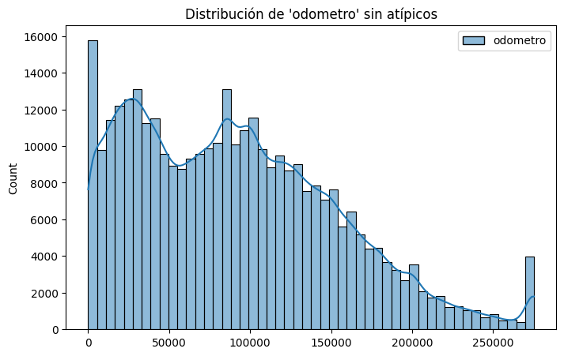
sns.boxplot(x=odometro_train_reg_sin_atip["odometro"])
plt.title("Boxplot de 'odometro'")
plt.show()
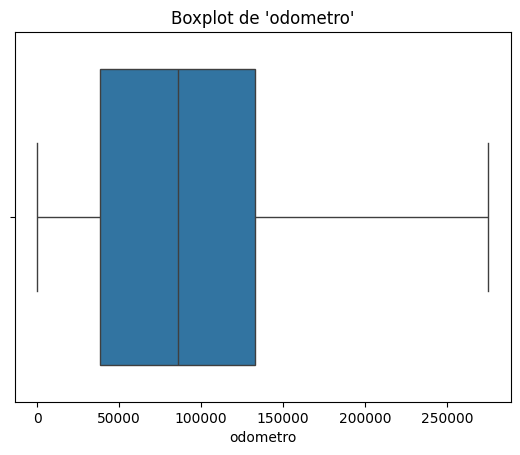
Como consecuencia, la distribución se volvió más simétrica y no hay presencia de outliers, lo que mejora la estabilidad y desempeño de los modelos lineales que se construyan.
Asignación respectiva a la variable odometro limpia.
X_test_reg["odometro"] = odometro_test_reg_sin_atip["odometro"].values
X_train_reg["odometro"] = odometro_train_reg_sin_atip["odometro"].values
X_test_clf["odometro"] = odometro_test_clf_sin_atip["odometro"].values
X_train_clf["odometro"] = odometro_train_clf_sin_atip["odometro"].values
Visualización de la variable respuesta Precio#
Teniendo en cuenta que la variable precio no tiene valores faltantes, unicamente se realiza el manejo de outliers.
manejador_precio = ManejoAtipicos(metodo="iqr", estrategia="winsorizar")
y_train_reg_sin_atipicos = manejador_precio.fit_transform(y_train_reg)
y_test_reg_sin_atipicos = manejador_precio.transform(y_test_reg)
print("Original:", y_train_reg.shape)
print("Sin atípicos:", y_train_reg_sin_atipicos.shape)
Original: (341504,)
Sin atípicos: (341504, 1)
plt.figure(figsize=(8,5))
sns.histplot(y_train_reg_sin_atipicos, bins=50, kde=True)
plt.title("Distribución de 'precio' sin outliers")
plt.show()
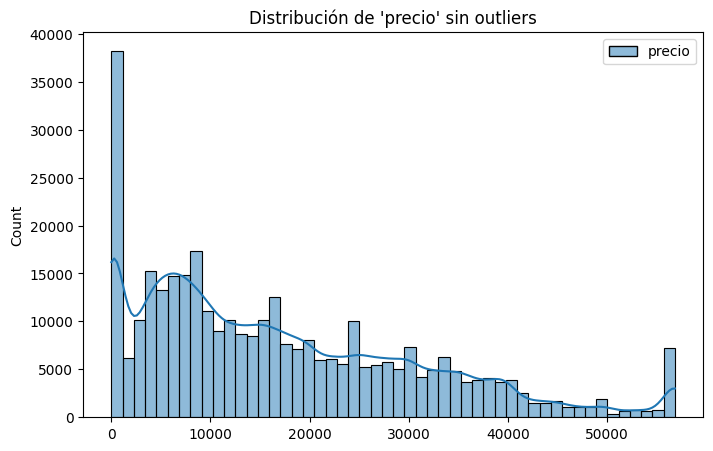
La variable precio despues del manejo de odatos atipicos presenta una distribución asimétrica positiva, con mayor concentración en rangos bajos (0–10,000) y una disminución progresiva hacia valores altos. Aún se observan picos intermedios (15,000–20,000) y menor frecuencia en precios superiores a 40,000.
plt.figure(figsize=(6,5))
sns.boxplot(x=y_train_reg_sin_atipicos["precio"])
plt.title("Boxplot de 'precio'sin outliers")
plt.show()
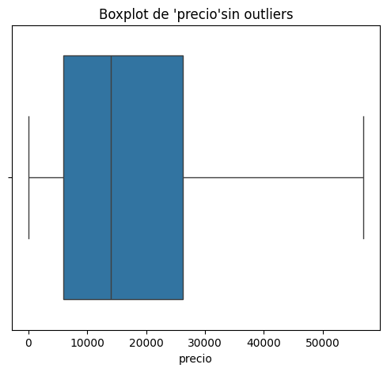
El boxplot de precio sin outliers muestra que la mayoría de los valores se concentran entre 10,000 y 30,000, con una mediana cercana a 15,000. Los bigotes se extienden desde valores bajos hasta precios cercanos a 55,000, reflejando una distribución aún algo dispersa.
Asignacion respectiva.
y_train_reg = y_train_reg_sin_atipicos["precio"]
y_test_reg = y_test_reg_sin_atipicos["precio"]
De esta manera, se asegura que los datos de precio utilizados en la modelación reflejen valores bien distribuidos y no estén distorsionados por registros erróneos o poco representativos.
Modelado#
Luego de realizar la etapa de limpieza de datos, donde se imputaron los valores faltantes y se trataron los outliers en variables clave como odometro y precio, los datos se encuentran en una forma más adecuada para la construcción de modelos predictivos.
En particular, se aplicaron las siguientes transformaciones:
Imputación de valores faltantes
Manejo de outliers
Con este dataset depurado, se procede a la etapa de preprocesamiento que incluye:
Escalado de variables numéricas con
StandardScaler.Codificación de variables categóricas mediante
OneHotEncoder, considerando categorías desconocidas.Integración de todo el flujo en un
ColumnTransformerdentro de un pipeline de scikit-learn.
Finalmente, sobre este pipeline se entrenarán tres modelos distintos:
Ridge Regression → modelo lineal regularizado que controla multicolinealidad penalizando los coeficientes grandes.
Lasso Regression → modelo lineal regularizado que además puede realizar selección automática de variables al forzar algunos coeficientes a cero.
Regresión Logística → modelo de clasificación que se empleará para predecir la variable de demanda (alta o baja) en función de las características del vehículo.
Con este enfoque se busca comparar el desempeño de modelos lineales de regresión regularizada para predicción de precios, y un modelo de clasificación para la predicción de demanda.
Preprocesamiento#
# Columnas por tipo
num_cols = X.select_dtypes(include='number').columns.tolist()
cat_cols = X.select_dtypes(include='object').columns.tolist()
# Preprocesador: escalado + codificación
preprocessor = ColumnTransformer(transformers=[
('num', StandardScaler(), num_cols),
('cat', OneHotEncoder(handle_unknown='ignore'), cat_cols)
])
Pipelines#
from sklearn.decomposition import TruncatedSVD
# RIDGE
ridge_pipe = Pipeline([
('prep', preprocessor),
('ridge', Ridge())
])
ridge_params = {'ridge__alpha': [0.1, 1, 10]}
ridge_grid = GridSearchCV(ridge_pipe, ridge_params, cv=5)
# PIPELINE LASSO
lasso_pipe = Pipeline([
('prep', preprocessor),
('svd', TruncatedSVD(n_components=100, random_state=42)), # para reducir dimensionalidad y evitar problemas con Lasso
('lasso', Lasso(max_iter=5000, random_state=42))
])
lasso_params = {'lasso__alpha': [0.01, 0.1, 1]}
lasso_grid = GridSearchCV(lasso_pipe, lasso_params, cv=5)
# PIPELINE REGRESIÓN LOGÍSTICA
logreg_pipe = Pipeline([
('prep', preprocessor),
('logreg', LogisticRegression(max_iter=2000, class_weight='balanced'))
])
logreg_params = {'logreg__C': [0.01, 0.1, 1, 10]}
logreg_grid = GridSearchCV(logreg_pipe, logreg_params, cv=5)
Entrenamiento#
ridge_grid.fit(X_train_reg, y_train_reg)
GridSearchCV(cv=5,
estimator=Pipeline(steps=[('prep',
ColumnTransformer(transformers=[('num',
StandardScaler(),
['odometro',
'fabricante_es_nulo',
'modelo_es_nulo',
'condicion_es_nulo',
'tipo_es_nulo']),
('cat',
OneHotEncoder(handle_unknown='ignore'),
['region',
'anio',
'fabricante',
'modelo',
'condicion',
'combustible',
'estado_titulo',
'transmision',
'traccion',
'tipo',
'color_pintura',
'estado'])])),
('ridge', Ridge())]),
param_grid={'ridge__alpha': [0.1, 1, 10]})In a Jupyter environment, please rerun this cell to show the HTML representation or trust the notebook. On GitHub, the HTML representation is unable to render, please try loading this page with nbviewer.org.
Parameters
| estimator | Pipeline(step...e', Ridge())]) | |
| param_grid | {'ridge__alpha': [0.1, 1, ...]} | |
| scoring | None | |
| n_jobs | None | |
| refit | True | |
| cv | 5 | |
| verbose | 0 | |
| pre_dispatch | '2*n_jobs' | |
| error_score | nan | |
| return_train_score | False |
Parameters
| transformers | [('num', ...), ('cat', ...)] | |
| remainder | 'drop' | |
| sparse_threshold | 0.3 | |
| n_jobs | None | |
| transformer_weights | None | |
| verbose | False | |
| verbose_feature_names_out | True | |
| force_int_remainder_cols | 'deprecated' |
['odometro', 'fabricante_es_nulo', 'modelo_es_nulo', 'condicion_es_nulo', 'tipo_es_nulo']
Parameters
| copy | True | |
| with_mean | True | |
| with_std | True |
['region', 'anio', 'fabricante', 'modelo', 'condicion', 'combustible', 'estado_titulo', 'transmision', 'traccion', 'tipo', 'color_pintura', 'estado']
Parameters
| categories | 'auto' | |
| drop | None | |
| sparse_output | True | |
| dtype | <class 'numpy.float64'> | |
| handle_unknown | 'ignore' | |
| min_frequency | None | |
| max_categories | None | |
| feature_name_combiner | 'concat' |
Parameters
| alpha | 1 | |
| fit_intercept | True | |
| copy_X | True | |
| max_iter | None | |
| tol | 0.0001 | |
| solver | 'auto' | |
| positive | False | |
| random_state | None |
lasso_grid.fit(X_train_reg, y_train_reg)
GridSearchCV(cv=5,
estimator=Pipeline(steps=[('prep',
ColumnTransformer(transformers=[('num',
StandardScaler(),
['odometro',
'fabricante_es_nulo',
'modelo_es_nulo',
'condicion_es_nulo',
'tipo_es_nulo']),
('cat',
OneHotEncoder(handle_unknown='ignore'),
['region',
'anio',
'fabricante',
'modelo',
'condicion',
'combustible',
'estado_titulo',
'transmision',
'traccion',
'tipo',
'color_pintura',
'estado'])])),
('svd',
TruncatedSVD(n_components=100,
random_state=42)),
('lasso',
Lasso(max_iter=5000,
random_state=42))]),
param_grid={'lasso__alpha': [0.01, 0.1, 1]})In a Jupyter environment, please rerun this cell to show the HTML representation or trust the notebook. On GitHub, the HTML representation is unable to render, please try loading this page with nbviewer.org.
Parameters
| estimator | Pipeline(step...m_state=42))]) | |
| param_grid | {'lasso__alpha': [0.01, 0.1, ...]} | |
| scoring | None | |
| n_jobs | None | |
| refit | True | |
| cv | 5 | |
| verbose | 0 | |
| pre_dispatch | '2*n_jobs' | |
| error_score | nan | |
| return_train_score | False |
Parameters
| transformers | [('num', ...), ('cat', ...)] | |
| remainder | 'drop' | |
| sparse_threshold | 0.3 | |
| n_jobs | None | |
| transformer_weights | None | |
| verbose | False | |
| verbose_feature_names_out | True | |
| force_int_remainder_cols | 'deprecated' |
['odometro', 'fabricante_es_nulo', 'modelo_es_nulo', 'condicion_es_nulo', 'tipo_es_nulo']
Parameters
| copy | True | |
| with_mean | True | |
| with_std | True |
['region', 'anio', 'fabricante', 'modelo', 'condicion', 'combustible', 'estado_titulo', 'transmision', 'traccion', 'tipo', 'color_pintura', 'estado']
Parameters
| categories | 'auto' | |
| drop | None | |
| sparse_output | True | |
| dtype | <class 'numpy.float64'> | |
| handle_unknown | 'ignore' | |
| min_frequency | None | |
| max_categories | None | |
| feature_name_combiner | 'concat' |
Parameters
| n_components | 100 | |
| algorithm | 'randomized' | |
| n_iter | 5 | |
| n_oversamples | 10 | |
| power_iteration_normalizer | 'auto' | |
| random_state | 42 | |
| tol | 0.0 |
Parameters
| alpha | 0.01 | |
| fit_intercept | True | |
| precompute | False | |
| copy_X | True | |
| max_iter | 5000 | |
| tol | 0.0001 | |
| warm_start | False | |
| positive | False | |
| random_state | 42 | |
| selection | 'cyclic' |
logreg_grid.fit(X_train_clf, y_train_clf)
GridSearchCV(cv=5,
estimator=Pipeline(steps=[('prep',
ColumnTransformer(transformers=[('num',
StandardScaler(),
['odometro',
'fabricante_es_nulo',
'modelo_es_nulo',
'condicion_es_nulo',
'tipo_es_nulo']),
('cat',
OneHotEncoder(handle_unknown='ignore'),
['region',
'anio',
'fabricante',
'modelo',
'condicion',
'combustible',
'estado_titulo',
'transmision',
'traccion',
'tipo',
'color_pintura',
'estado'])])),
('logreg',
LogisticRegression(class_weight='balanced',
max_iter=2000))]),
param_grid={'logreg__C': [0.01, 0.1, 1, 10]})In a Jupyter environment, please rerun this cell to show the HTML representation or trust the notebook. On GitHub, the HTML representation is unable to render, please try loading this page with nbviewer.org.
Parameters
| estimator | Pipeline(step..._iter=2000))]) | |
| param_grid | {'logreg__C': [0.01, 0.1, ...]} | |
| scoring | None | |
| n_jobs | None | |
| refit | True | |
| cv | 5 | |
| verbose | 0 | |
| pre_dispatch | '2*n_jobs' | |
| error_score | nan | |
| return_train_score | False |
Parameters
| transformers | [('num', ...), ('cat', ...)] | |
| remainder | 'drop' | |
| sparse_threshold | 0.3 | |
| n_jobs | None | |
| transformer_weights | None | |
| verbose | False | |
| verbose_feature_names_out | True | |
| force_int_remainder_cols | 'deprecated' |
['odometro', 'fabricante_es_nulo', 'modelo_es_nulo', 'condicion_es_nulo', 'tipo_es_nulo']
Parameters
| copy | True | |
| with_mean | True | |
| with_std | True |
['region', 'anio', 'fabricante', 'modelo', 'condicion', 'combustible', 'estado_titulo', 'transmision', 'traccion', 'tipo', 'color_pintura', 'estado']
Parameters
| categories | 'auto' | |
| drop | None | |
| sparse_output | True | |
| dtype | <class 'numpy.float64'> | |
| handle_unknown | 'ignore' | |
| min_frequency | None | |
| max_categories | None | |
| feature_name_combiner | 'concat' |
Parameters
| penalty | 'l2' | |
| dual | False | |
| tol | 0.0001 | |
| C | 10 | |
| fit_intercept | True | |
| intercept_scaling | 1 | |
| class_weight | 'balanced' | |
| random_state | None | |
| solver | 'lbfgs' | |
| max_iter | 2000 | |
| multi_class | 'deprecated' | |
| verbose | 0 | |
| warm_start | False | |
| n_jobs | None | |
| l1_ratio | None |
Selección de mejor modelo#
print("Mejor alpha Ridge:", ridge_grid.best_params_)
Mejor alpha Ridge: {'ridge__alpha': 1}
print("Mejor alpha Lasso:", lasso_grid.best_params_)
Mejor alpha Lasso: {'lasso__alpha': 0.01}
print("Mejor C LogReg:", logreg_grid.best_params_)
Mejor C LogReg: {'logreg__C': 10}
Evalución de modelos#
def evaluar_regresion(modelo, X_test, y_test, nombre_modelo="Modelo"):
y_pred = modelo.predict(X_test)
mae = mean_absolute_error(y_test, y_pred)
rmse = np.sqrt(mean_squared_error(y_test, y_pred))
r2 = r2_score(y_test, y_pred)
print(f"\nEvaluación del modelo de regresión: {nombre_modelo}")
print(f"→ MAE: {mae:.2f}")
print(f"→ RMSE: {rmse:.2f}")
print(f"→ R²: {r2:.3f}")
# Gráfico de valores reales vs predichos
plt.figure(figsize=(6, 6))
sns.scatterplot(x=y_test, y=y_pred, alpha=0.5)
plt.plot([y_test.min(), y_test.max()], [y_test.min(), y_test.max()], '--r')
plt.xlabel("Valor real")
plt.ylabel("Valor predicho")
plt.title(f"{nombre_modelo}: Real vs. Predicho")
plt.grid(True)
plt.show()
def evaluar_clasificacion(modelo, X_test, y_test, nombre_modelo="Modelo"):
y_pred = modelo.predict(X_test)
y_prob = modelo.predict_proba(X_test)[:, 1]
acc = accuracy_score(y_test, y_pred)
prec = precision_score(y_test, y_pred)
rec = recall_score(y_test, y_pred)
f1 = f1_score(y_test, y_pred)
auc = roc_auc_score(y_test, y_prob)
print(f"\nEvaluación del modelo de clasificación: {nombre_modelo}")
print(f"→ Accuracy: {acc:.3f}")
print(f"→ Precision: {prec:.3f}")
print(f"→ Recall: {rec:.3f}")
print(f"→ F1-Score: {f1:.3f}")
print(f"→ AUC: {auc:.3f}")
# Matriz de confusión
cm = confusion_matrix(y_test, y_pred)
sns.heatmap(cm, annot=True, fmt="d", cmap="Blues")
plt.xlabel("Prediccion")
plt.ylabel("Real")
plt.title(f"{nombre_modelo} - Matriz de Confusión")
plt.show()
# Curva ROC
fpr, tpr, _ = roc_curve(y_test, y_prob)
plt.figure(figsize=(6, 4))
plt.plot(fpr, tpr, label=f"AUC = {auc:.3f}")
plt.plot([0, 1], [0, 1], "k--")
plt.xlabel("Tasa de Falsos Positivos (FPR)")
plt.ylabel("Tasa de Verdaderos Positivos (TPR)")
plt.title(f"{nombre_modelo} - Curva ROC")
plt.legend()
plt.grid(True)
plt.show()
evaluar_regresion(ridge_grid.best_estimator_, X_test_reg, y_test_reg)
Evaluación del modelo de regresión: Modelo
→ MAE: 5241.97
→ RMSE: 8224.76
→ R²: 0.664
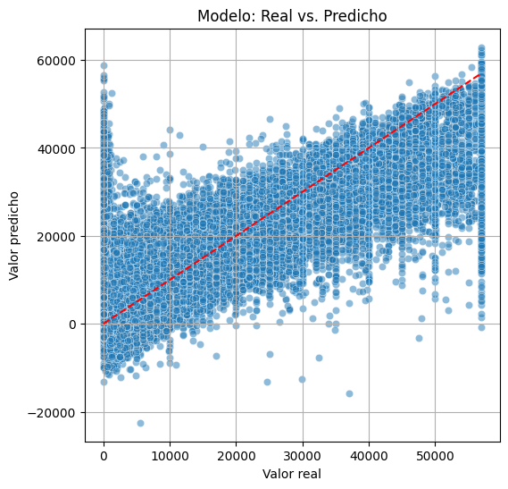
El gráfico muestra una tendencia alineada con la diagonal, lo que indica un ajuste razonable aunque con cierta dispersión en valores altos y bajos.
MAE: 5,241.97
RMSE: 8,224.76
R²: 0.664
En conjunto, el modelo logra capturar parte importante de la variabilidad del precio, aunque aún presenta errores moderados.
evaluar_regresion(lasso_grid.best_estimator_, X_test_reg, y_test_reg)
Evaluación del modelo de regresión: Modelo
→ MAE: 7352.21
→ RMSE: 10440.19
→ R²: 0.458
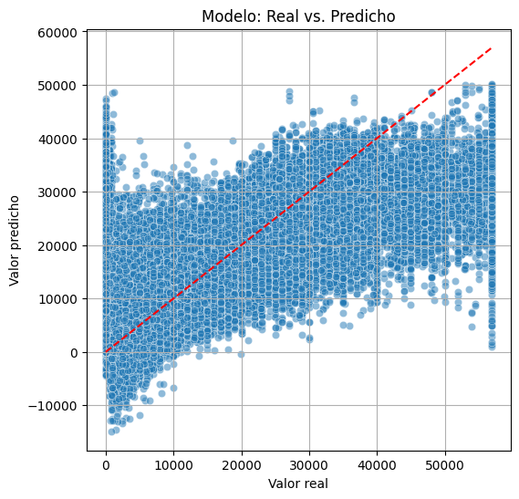
El modelo Lasso muestra un ajuste limitado entre los valores reales y predichos del precio.
Aunque sigue la tendencia general (a mayor valor real, mayor predicción), existe una alta dispersión en los puntos, especialmente en los precios bajos y altos.
Esto se refleja en las métricas:
MAE: 7,352.21 → error medio por predicción relativamente alto.
RMSE: 10,440.19 → indica que existen errores grandes en algunos casos.
R²: 0.458 → el modelo explica solo el 45.8% de la variabilidad en el precio.
evaluar_clasificacion(logreg_grid.best_estimator_, X_test_clf, y_test_clf, "Logistic Regression")
Evaluación del modelo de clasificación: Logistic Regression
→ Accuracy: 0.862
→ Precision: 0.863
→ Recall: 0.862
→ F1-Score: 0.862
→ AUC: 0.938
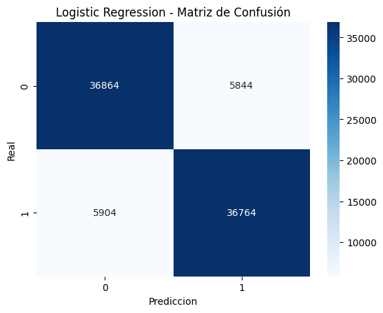
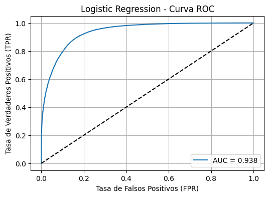
El modelo de Regresión Logística presenta un desempeño sólido en la clasificación binaria.
Métricas principales
Accuracy: 0.862 → el 86.2% de las predicciones fueron correctas.
Precision: 0.863 → cuando el modelo predice clase positiva (1), acierta el 86.3% de las veces.
Recall: 0.862 → detecta correctamente el 86.2% de los casos positivos reales.
F1-Score: 0.862 → balance adecuado entre precisión y recall.
AUC: 0.938 → excelente capacidad de discriminación entre clases.
La Matriz de confusión
Verdaderos Negativos (36864): casos clase 0 bien clasificados.
Falsos Positivos (5844): casos clase 0 mal clasificados como 1.
Falsos Negativos (5904): casos clase 1 mal clasificados como 0.
Verdaderos Positivos (36764): casos clase 1 bien clasificados.
La curva ROC (Receiver Operating Characteristic) muestra el desempeño del modelo de Regresión Logística al diferenciar entre las dos clases.
El eje X representa la tasa de falsos positivos (FPR).
El eje Y representa la tasa de verdaderos positivos (TPR o Recall).
La línea diagonal negra indica un modelo aleatorio (AUC = 0.5).
La curva azul se sitúa claramente por encima de esta línea, evidenciando un buen poder de discriminación.